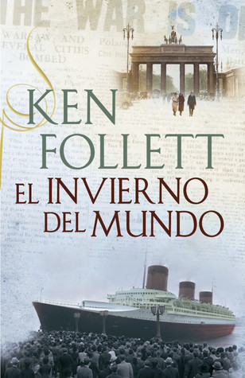

El invierno del mundo
Reseña por Jorge I. Zuluaga

Ver detalles · Ver reseña en GoodReads (necesita cuenta)
Como seguramente saben, *El invierno del mundo* es la segunda novela de la trilogía sobre el siglo XX de Follett (aquí mi reseña de La caída de los gigantes, la primera novela de la trilogía); se desarrolla en los años que siguieron a la Gran Guerra y los que sucedieron a la caída de Hitler. ¡Y qué años!
Como lo he repetido en todas mis reseñas de novelas históricas (el género de ficción que más disfruto), no hay mejor manera de aprender historia que hacerlo a través de novelas bien escritas. Así que, si les gusta la historia de la denominada Segunda Guerra Mundial, *El invierno del mundo* es *el* libro (aunque deberán leer *La caída de los gigantes* antes para seguirle el rastro a las familias cuya historia constituye el tronco narrativo principal de la trilogía).
Lo que más me impresionó de la novela: sentir que estamos viviendo en el planeta, cuando escribo esta reseña (septiembre de 2022), un resurgimiento del fascismo. En mi país, Colombia, estamos terminando uno de los peores gobiernos de la historia (¡y eso que los hemos tenido por decenas!) y hay incertidumbre en lo que nos deparan las siguientes elecciones (espero que mi «yo» futuro, que leerá estas líneas en un par de años —si vivo lo suficiente—, esté pensando en este momento: «afortunadamente no pasa nada peor y el fascismo en Colombia se fue apagando como predecían los analistas»).
Todas las cosas que vivieron los países europeos cuya historia se relata entre líneas en esta novela, España, Francia, Inglaterra y, por supuesto, Alemania, las estamos viendo en los países del presente, 75 años después.
Es increíble ver retratada en la novela, con la historia del ascenso de los nazis, la subida de Trump y los supremacistas blancos con su cuento del enemigo interno y la grandeza de su país, o el ascenso del uribismo en Colombia después del proceso de paz y su indiferencia ante los crímenes de jóvenes que ha cometido una policía aparentemente sin mando, a la que le falta poco para convertirse en una verdadera Gestapo. Saber que se está repitiendo lo mismo en el mundo del siglo XXI es verdaderamente terrorífico. Por el lado del comunismo ruso, retratado con precisión en la novela, tampoco es que falten ejemplos actuales. Hoy también tenemos nuestros Stalin, Kim Jong-un, Maduro y hasta el mismo Putin, que mantienen regímenes autoritarios, controlan los medios de comunicación, espían a sus enemigos y asesinan impunemente opositores.
Particularmente conmovedoras en la novela son las historias de las mujeres alemanas en las semanas y meses posteriores a la llegada del Ejército Rojo a la capital (afortunadamente todos conocemos de alguna manera la historia, así que dudo que esto sea un *spoiler*). La brutalidad de la venganza a la que fueron sometidas es inenarrable y pocas veces había sentido tan intensamente la realidad de esos hechos como lo hice a través de los dramas de algunas de las protagonistas. ¡Tienen que llegar hasta el final para leerlo!
Como es constante en las novelas de Follett, otra vez las mujeres protagonizan la mayor parte de la novela. Y no es para menos. De un lado, las mujeres son el 50 % de la humanidad (y esta tautología la recuerdo porque a veces se nos escapa al hablar de historia, incluso de los períodos en los que hubo guerras producidas por el ego *testosteronudo* de algunos hombres), sino además que, como sabemos, la brutalidad de la guerra que acabó con la mayor parte de los hombres jóvenes dejó a las mujeres con la tarea del sostenimiento de su familia y la reconstrucción posterior a la guerra. Podría decirse que Europa casi fue destruida por hombres y fue reconstruida después por mujeres.
La brutalidad de las policías secretas de los nazis, la Gestapo, y de los rusos, NKVD, solo puede entenderse a través de la ficción de una novela histórica. Por muchos documentos históricos que revises o sesudas declaraciones de académicos que repitan en documentales, es viviendo el drama de Walter von Ulrich, Werner Frank, una mujer decapitada por espionaje o las víctimas de las purgas de Stalin y otros personajes de la novela, tal y tal como son narrados con distintos grados de detalle aquí, que logras comprender la brutalidad de la represión a la que estuvieron sometidas las personas durante esos oscuros años del siglo XX.
Me sorprendió descubrir en la novela una descripción relativamente pormenorizada del ataque a Pearl Harbor, el diseño de la bomba atómica (con detalles de la física implicada, ¡genial!) y las batallas de Moscú y Stalingrado. Muy acertado el Follett al escoger algunos de los eventos más increíbles de la guerra y poner a los protagonistas de la novela en aquellos lugares para que los conozcamos con más detalle.
Como es obvio, me demoré más en cerrar el libro que en abrir *El umbral de la eternidad*. No me pierdo por nada el final de la trilogía y la historia de la Guerra Fría, que nunca ha tenido para mí un gran atractivo (por haber vivido parte de ella), pero que ahora ingresa en mi radar por obra y gracia de un buen escritor.
¡Gracias a Follett!